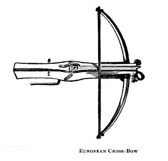
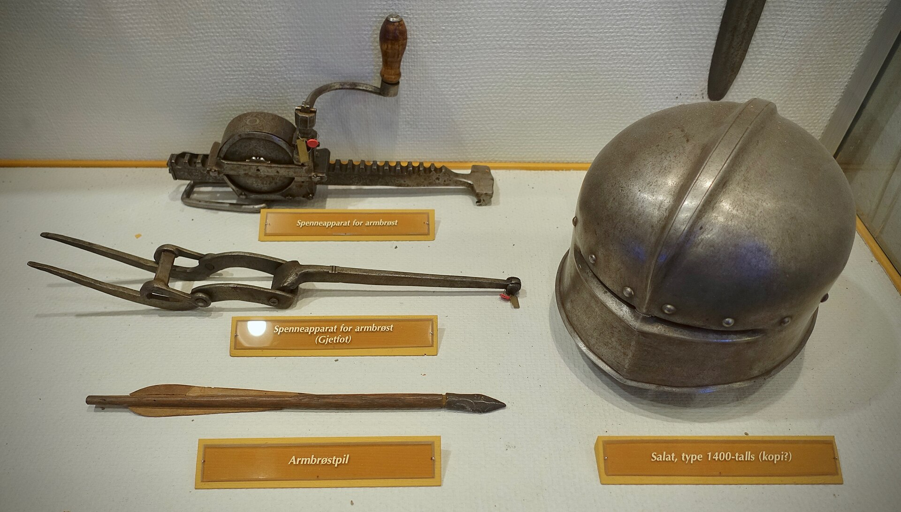
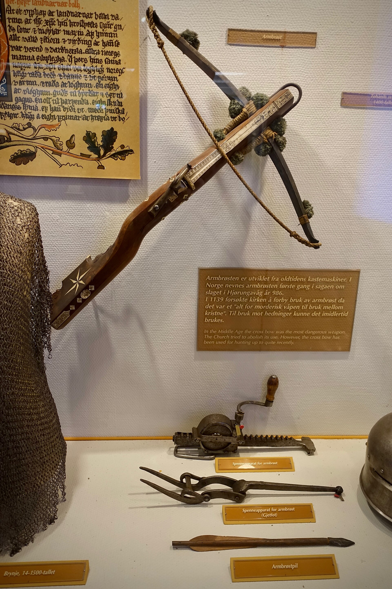
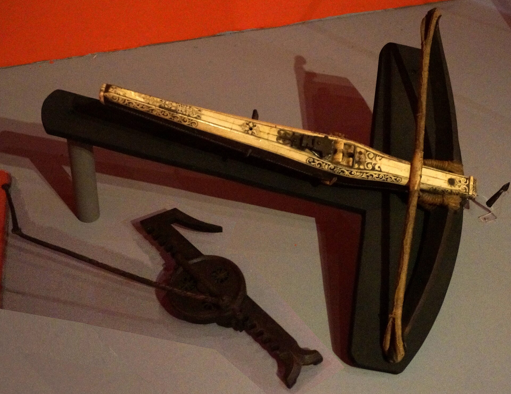
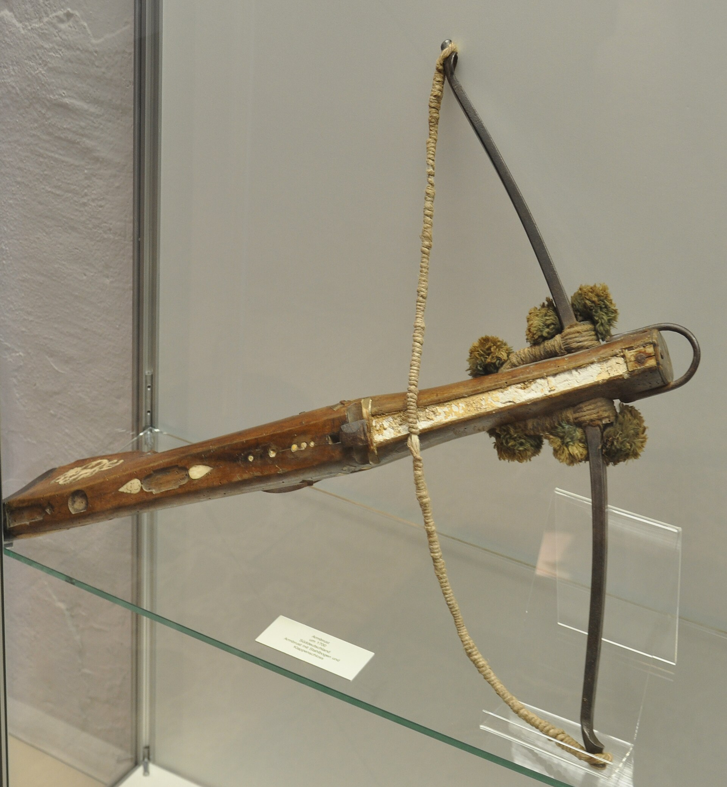
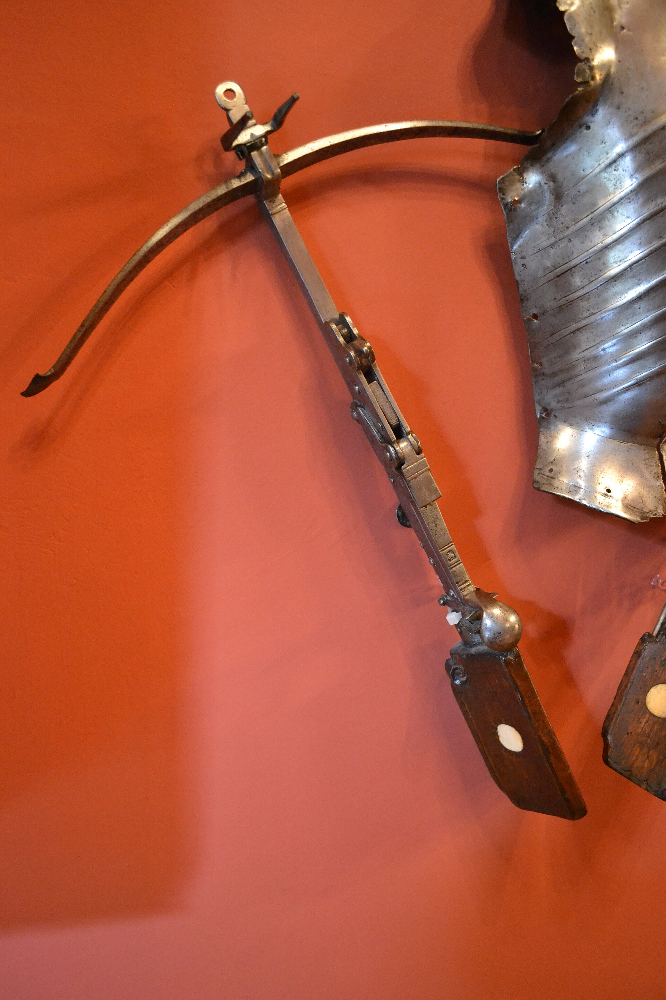
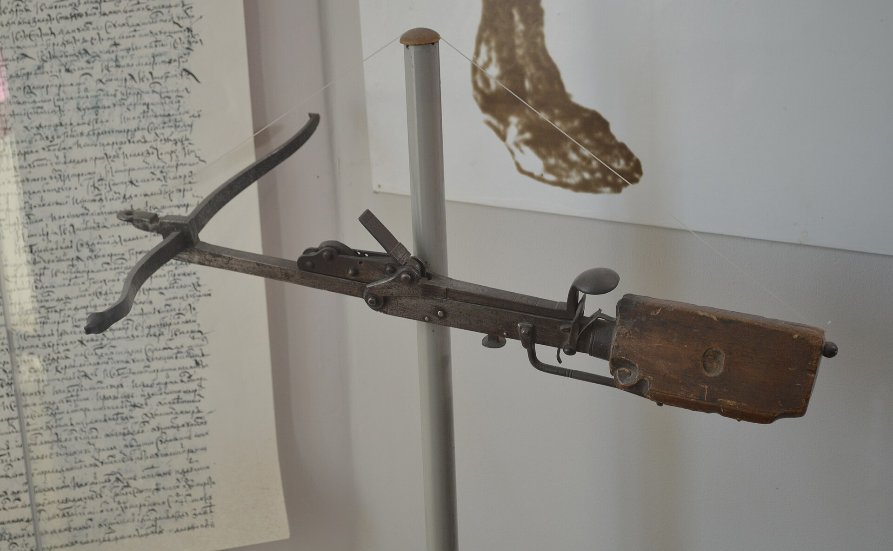
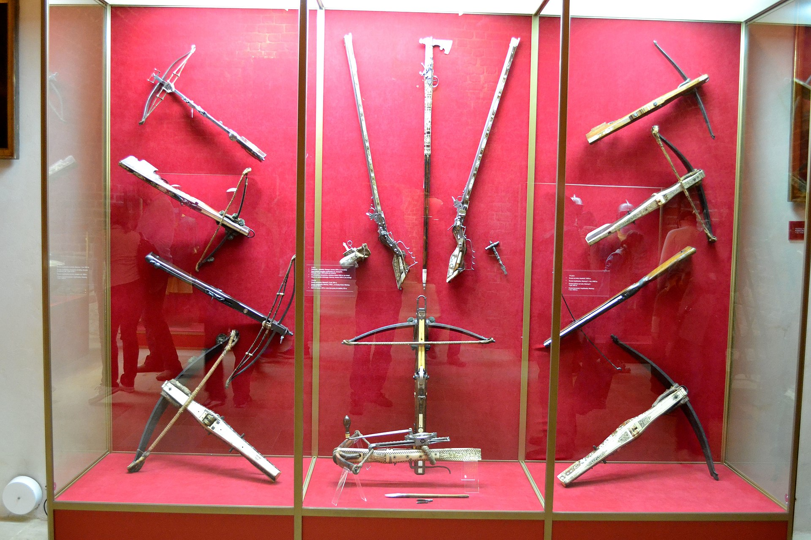

Pick which one(s) to base the story-asset Armbrust on.

engraving-19c-european-crossbow.jpg — Clean 19c knowledge engraving, line drawing

armborst-norwegian-1.jpg — Norwegian medieval armbrøst, museum photo

armborst-norwegian-2.jpg — Same Norwegian armbrøst, different angle

arbalete-cranequin.jpg — French arbalète à cranequin, 17c

armbrust-1700-senftenberg.jpg — South German Armbrust ~1700, Senftenberg museum

ballesta-cerralbo.jpg — Spanish ballesta, Museo Cerralbo

crossbow-vladimir-17c.jpg — 17c crossbow, Vladimir Historical Museum

pszczyna-museum.jpg — Polish museum crossbow